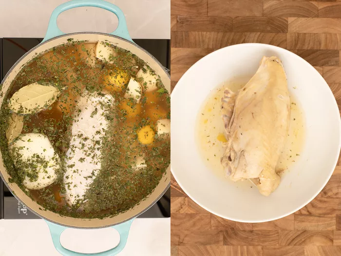

Juan Camilo Cifuentes
Recipe from Colombia
Ajiaco Colombiano is a traditional thick soup from Colombia's capital, Bogotá. Perfect for cold weather, this staple will always remind me of home. This is something we don't eat very often; it's reserved for special occasions like big family dinners.
For How Many People
6 PeoplePreparation Time
20 MinutesCooking Time
1Hr 15 MinutesIngredients
Nutrition Facts
Colombian Ajiaco (1 serving) contains 69g total carbs, 69g net carbs, 9g fat, 23g protein, and 428 calories.
Cooking Tip
Ajiaco is best served on ceramic bowls. Regular white rice can be used as a side.
Fun Fact
The phrase “aji” is said to have originated from the Taino tribe’s language. “Aji” means “hot pepper” in Spanish.
Cooking Tip
Papas Criollas are small, creamy yellow Colombian potatoes with a unique buttery flavor and texture. They can occasionally be found frozen in Latin markets. If unavailable, substitute small Yukon Golds or yellow fingerling potatoes, peeled and cut into 1-inch chunks.
Step-By Step Recipe
1. In a large pot, place the chicken, corn, chicken bouillon, cilantro, scallions, garlic, salt and pepper. Add the water and bring to a boil, then reduce heat to medium and cook for about 30 to 35 minutes, until chicken is cooked and tender. Remove the chicken and set aside.
2. Continue cooking the corn for about 15 more minutes. Discard green onion and add red potatoes, white potatoes, and the guascas. Cook for 15 more minutes.
3. Uncover and add the frozen papa criolla and simmer for 15 minutes, season with salt and pepper.
4. Cut the chicken meat into small pieces and return to the pot. Serve the Ajiaco hot with capers and heavy cream on the side.